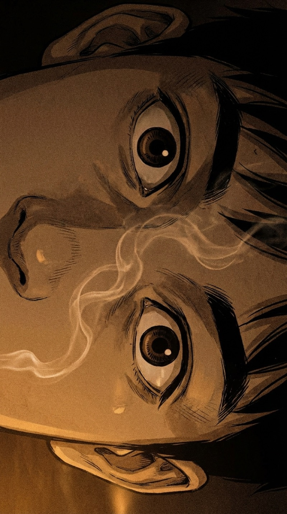
我死了？……不对。
意识从黑暗中浮起。鼻腔里是一股熟悉到骨子里的味道——蚊香。那种老式的绿色盘香，烧到一半会断的那种。
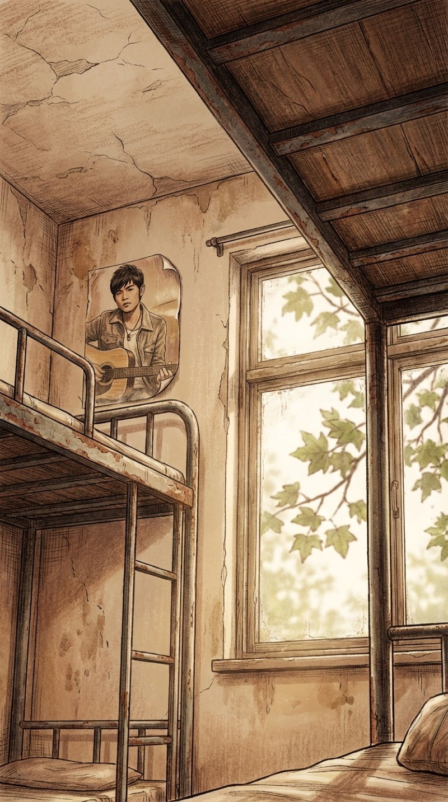
我睁开眼，看到的是一道裂缝。天花板上那道从左上角延伸到灯座的裂缝。
这个角度，这个味道……不可能。这是——上海交大闵行校区东22号楼，402室，下铺。
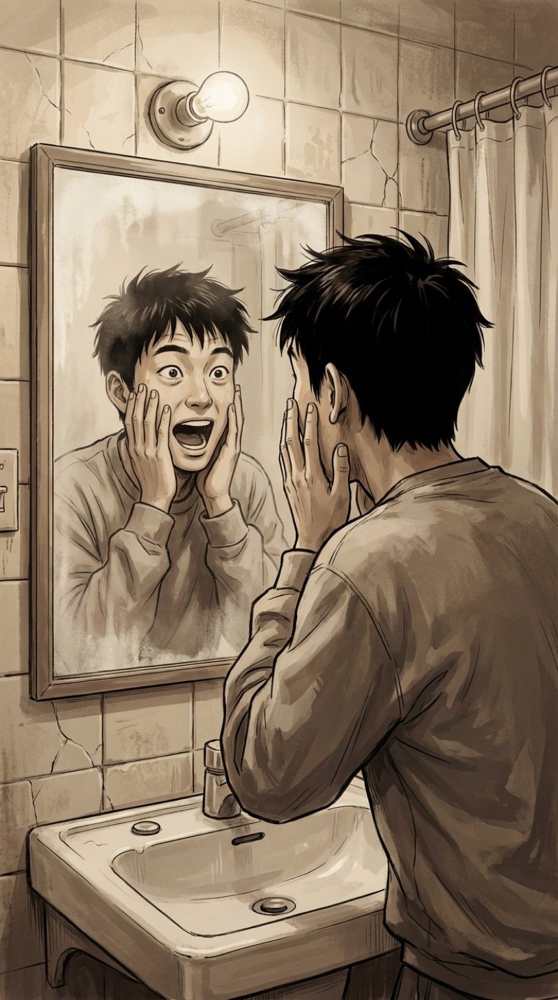
我跌跌撞撞冲到洗漱台前。镜子上蒙着一层水雾，我用手胡乱抹开——
镜子里的脸……这是18岁的我。没有胡子，没有黑眼圈，甚至……头发还这么多。
我用双手摸着自己年轻得不真实的脸，嘴角控制不住地往上翘。
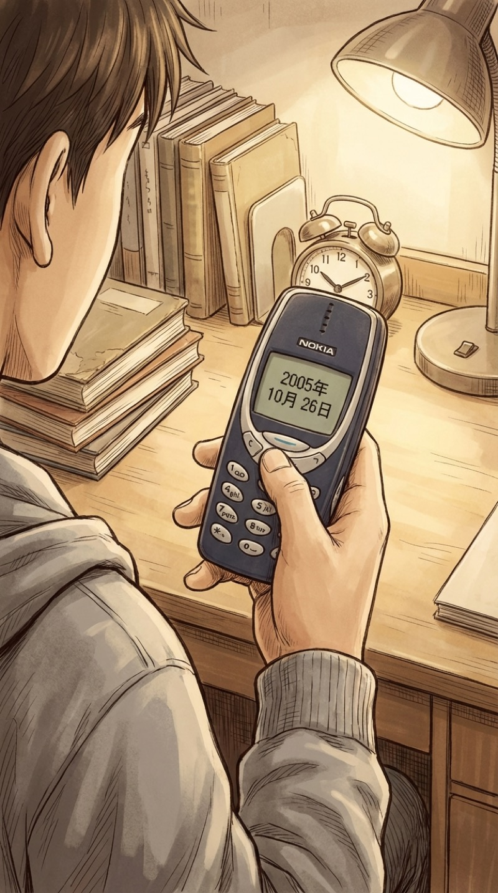
枕头边放着一台诺基亚3310。那块巴掌大的屏幕上，日期写得清清楚楚。
2001年9月1日。上海交大报到日。
我回来了。
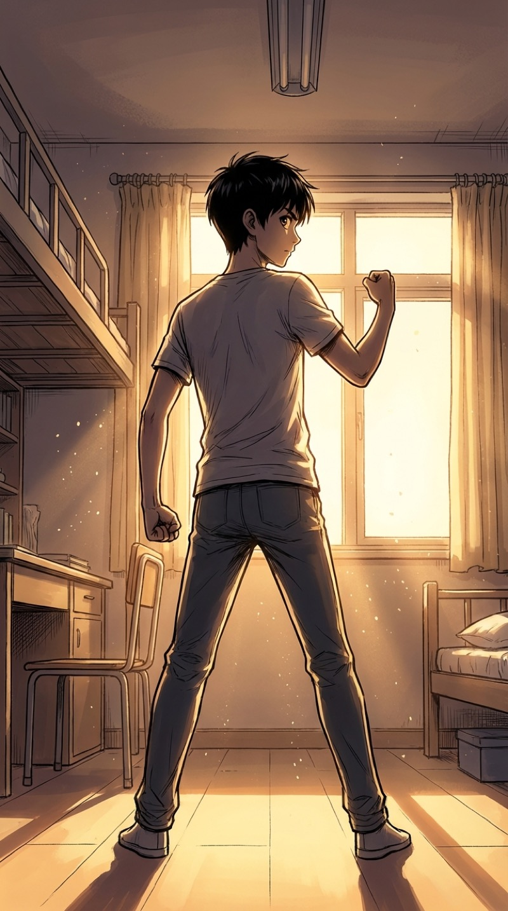
晨光从窗户涌进来，打在我的背上。窗外是九月的梧桐，叶子还绿得发亮。
25年后的一切，我都记得。每一个风口，每一次浪潮，每一个改变世界的节点。这一次——
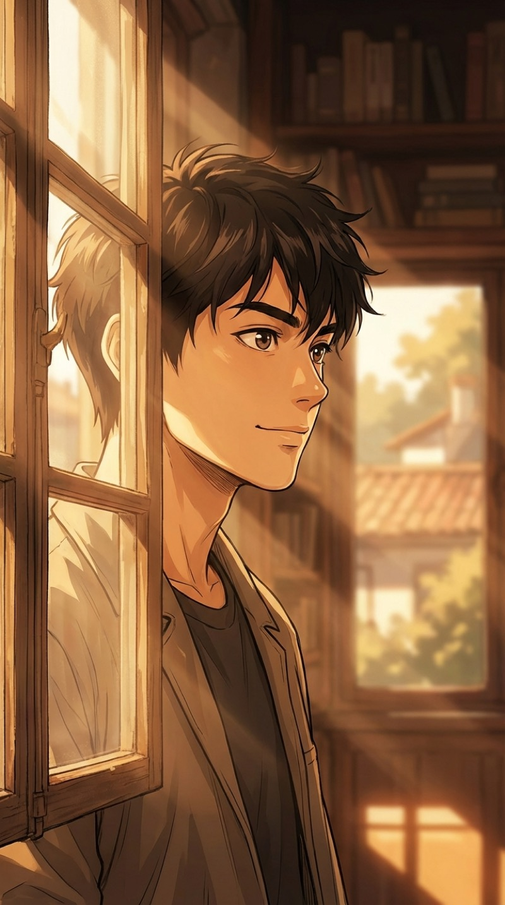
我转身看向窗外远处的城市天际线。2001年的上海，浦东还是一片工地。
这一次，我不做追风者。我要做造风的人。
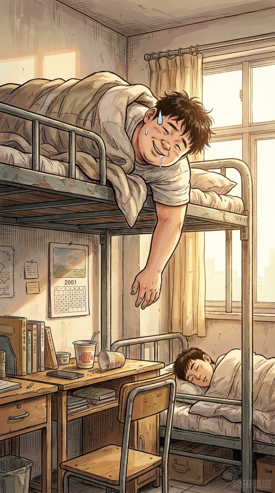
"兄弟……几点了……"
上铺传来含糊的东北口音，伴随着床板的吱呀声。一个胖乎乎的身影翻了个身，差点连人带被子滚下来。嘴角还挂着疑似昨晚辣条的残渣。
这是我室友，阿胖。上辈子的铁哥们，后来一起创业的搭档。此刻他还只是个刚离开哈尔滨的懵懂新生，电脑开机都要人教。
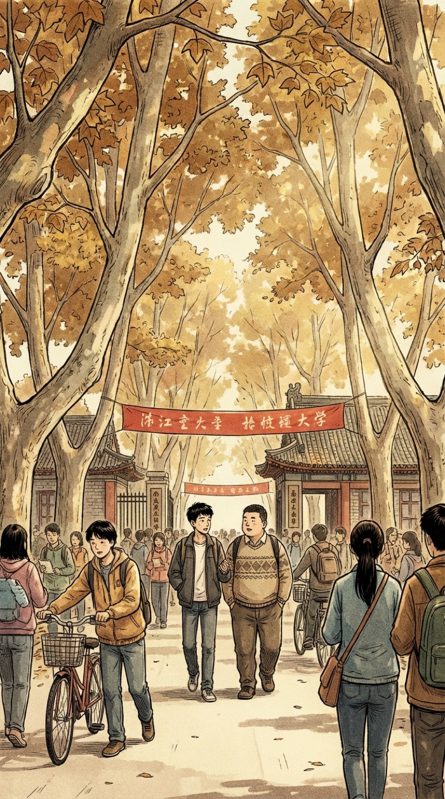
走在校园里，一切都是记忆中的样子。梧桐大道上挤满了拖着行李箱的新生，自行车铃声此起彼伏。横幅上写着"欢迎新同学"，字体是手写的——那个没有喷绘打印的年代。
那些消失的老建筑还在，那些被砍掉的梧桐树还年轻。这一切，比任何VR都真实。
· · ·
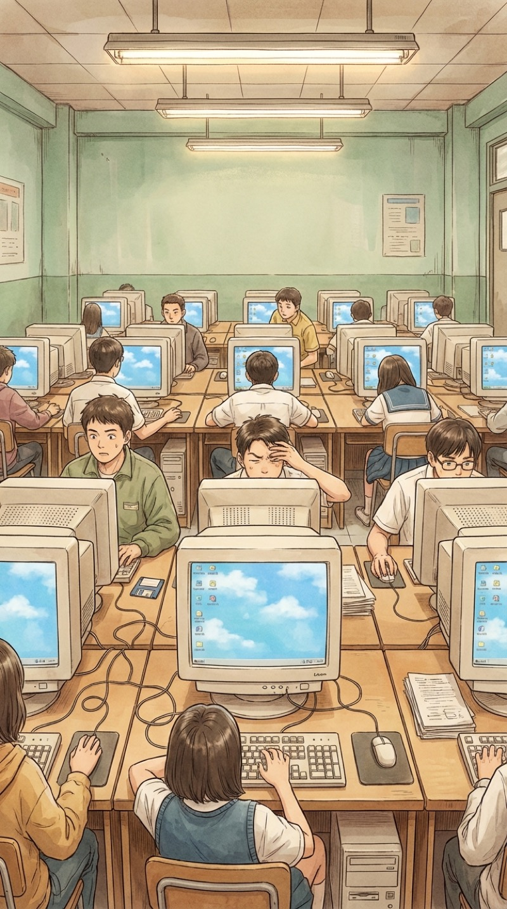
计算机导论，第一课。
机房里是清一色的CRT显示器，Windows 98的蓝色桌面。空气里飘着主机散热的焦糊味，混着廉价的空气清新剂。同学们笨拙地移动鼠标，有人连双击都要练好几次。
而我脑子里，装着GPT-4的架构原理。
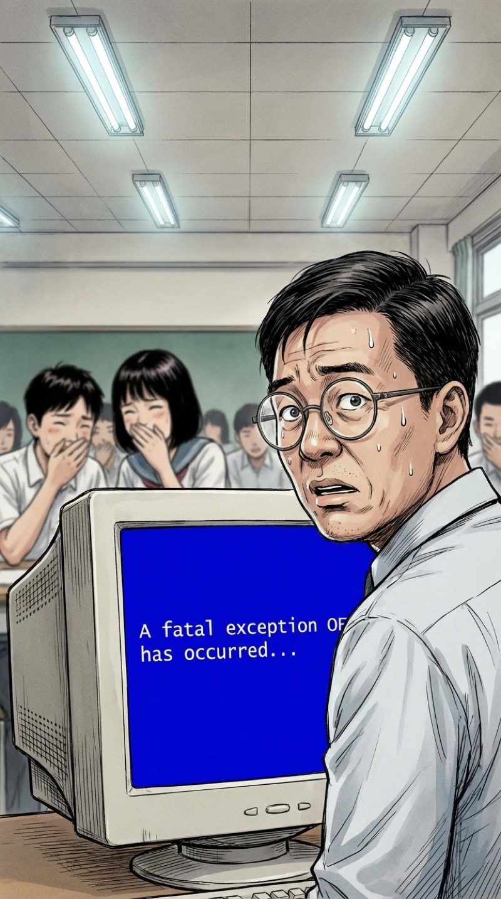
突然，前排一台电脑蓝屏了。满屏白字在蓝色背景上密密麻麻，像一面绝望的旗帜。
"同学们，这个……我们先换一台……"王老师推了推眼镜，额头上渗出汗珠。
"老师，我来试试？"
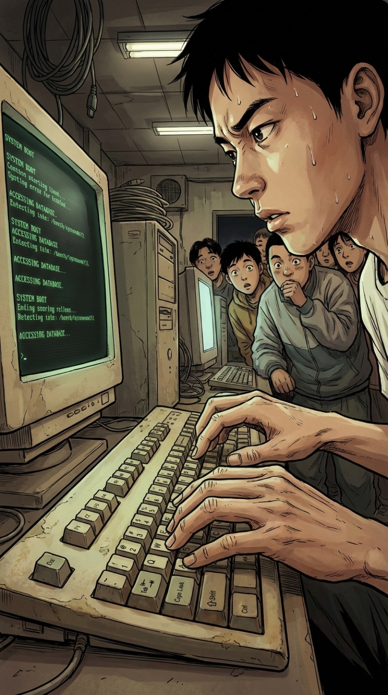
我打开CMD。手指落在键盘上的那一刻，25年的肌肉记忆全部复活。
指尖飞舞。命令行里的字符像瀑布一样倾泻。
不是背出来的——是身体记住的。上辈子写过的几百万行代码，每一行都刻在我的神经回路里。
30秒。蓝屏修复。
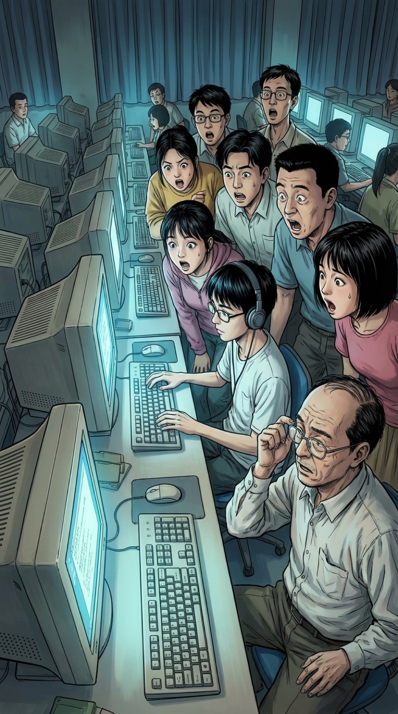
安静了三秒。那种整个教室空气都凝固的安静。
"卧槽！你怎么做到的？！"
然后，炸了。
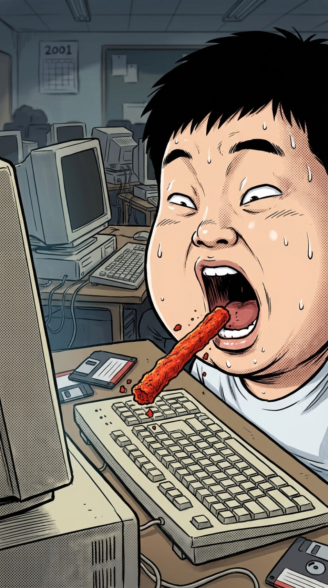
阿胖嘴里的辣条掉在键盘上，他都没注意到。那根辣条精准地卡在F和G之间，在接下来的整个学期都没人清理过。
"兄弟……你转系的？你真是新生？你不是请来的外援？"
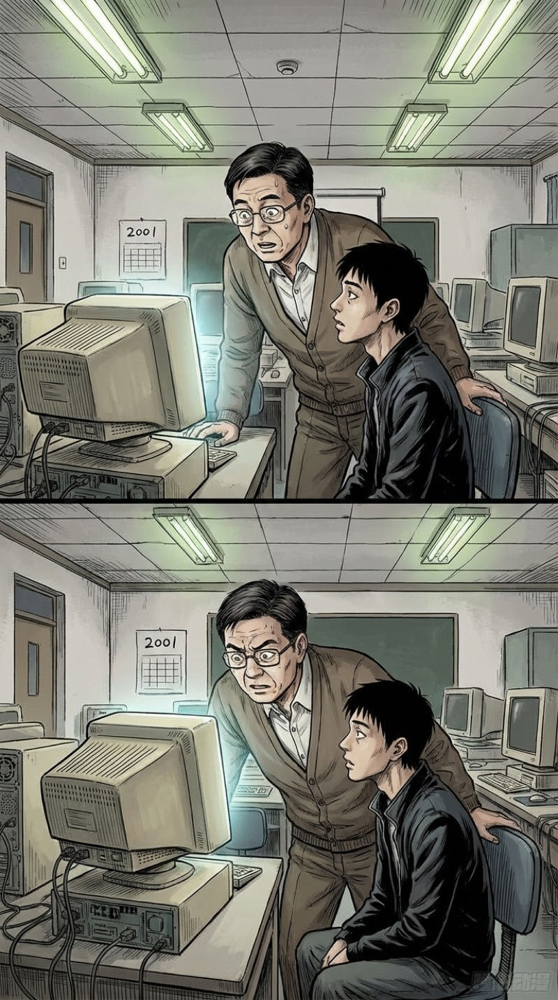
王老师弯下腰，盯着屏幕上的命令行历史记录。他的表情从惊讶慢慢变成了一种……我认识的表情。
那是一个真正的技术人遇到另一个真正的技术人时，才会有的眼神。
"你用的这个命令……不是教材上的。你在哪里学的？"
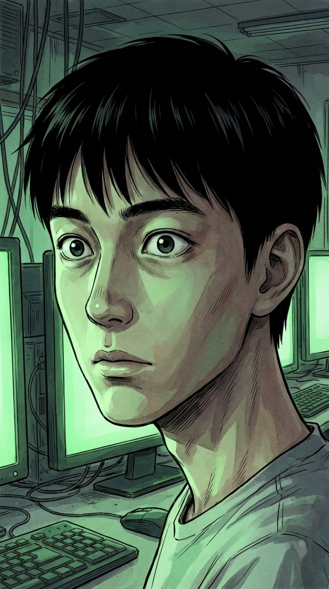
糟糕。
我用了Linux命令行的习惯。2001年，Windows 98都还是主流。Linux对大多数人来说闻所未闻。连Ubuntu都要三年后才发布。
收敛。必须收敛。但怎么回答？
⚡ 决策点
A: "网上自学的"——低调隐藏，安全但平庸
B: "我爸是程序员，从小接触"——合理谎言
C: 反问老师："老师您用过Red Hat吗？"——主动出击 ✓
黑客基因发作。我不会单纯隐藏——我要试探对方的水平。如果这个老师只是个教书匠，那句话就是无害的技术问题。但如果他不是……
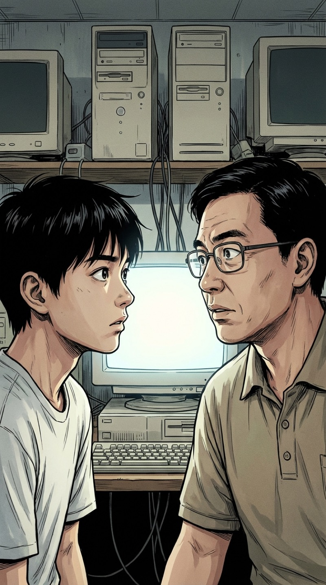
"老师，您用过Red Hat吗？6.2版本刚出，内核编译比Debian快不少。"
王老师的瞳孔放大了。就那么一瞬间——不到半秒——但我捕捉到了。
他不只是教开关机的老师。
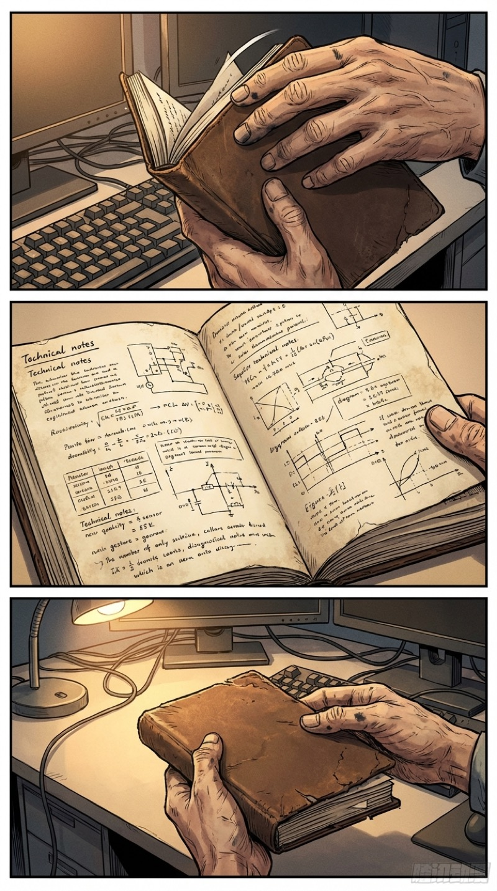
他下意识地翻开笔记本，又立刻合上。但我已经看到了——密密麻麻的kernel编译笔记，手写的系统调用表，还有几行我认得出的汇编代码。
这个"只会教开关机"的年轻讲师，藏得比我还深。
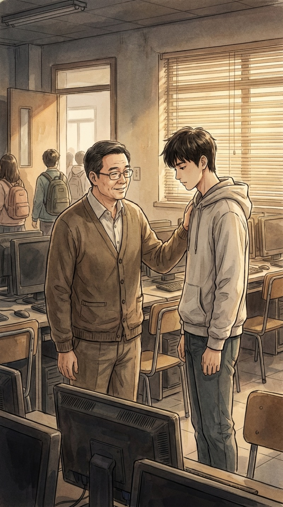
下课后，同学们陆续离开。王老师站在讲台旁，等到最后一个人走出去。
"课后来我办公室。"
就四个字。轻描淡写，像在说"记得交作业"。但我知道——这扇门，打开了。
· · ·
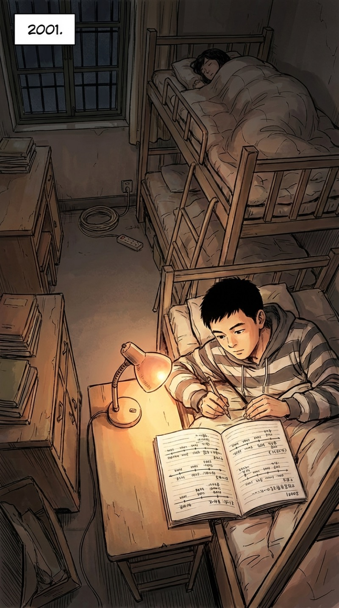
熄灯后的宿舍。阿胖的鼾声像一台稳定运行的服务器，持续且有节奏。
我缩在下铺，台灯调到最暗，在笔记本上飞速地写。
2001→2003：互联网泡沫破裂后的抄底机会。2004：Facebook诞生，社交网络时代。2007：iPhone。2009：比特币=0.003美元……
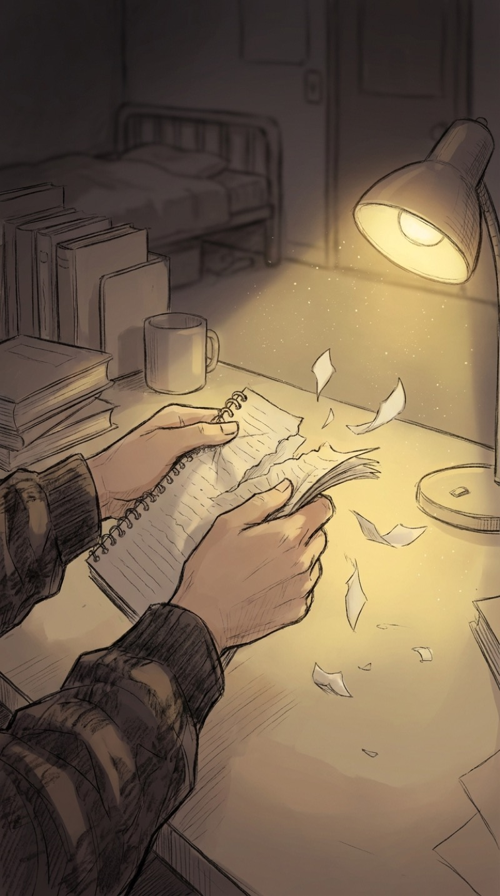
我把未来25年的每一个关键节点都写了下来。
然后——撕掉。
纸片在台灯的暖光里缓缓飘落，像冬天交大校园里的梧桐叶。
不能留证据。所有的路线图，只能在脑子里。
⚡ 决策点
A: 先低调学习一学期，摸清环境再动手
B: 立刻用已知漏洞做一次黑客行动，建立地下声誉
C: 找到未来的大佬——现在还是nobody的他们——提前布局人脉 ✓
我是创业者。上辈子最大的遗憾不是错过了技术，而是错过了人。最值钱的从来不是代码，是写代码的那个人。那些未来改变世界的人，现在还在某间宿舍里啃泡面。
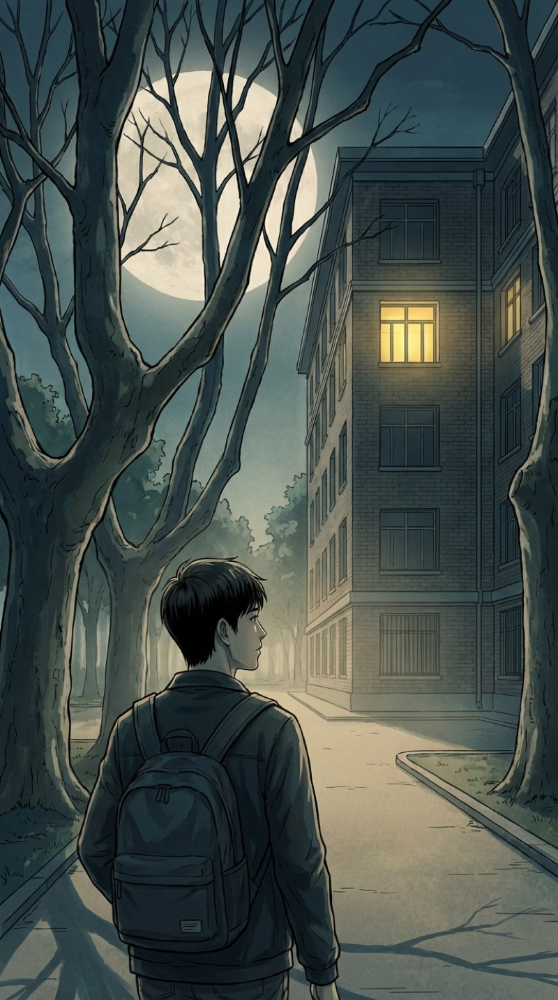
夜晚的校园安静得像另一个世界。月光透过梧桐叶洒下斑驳的影子。
我知道这栋楼三楼那间永远亮着灯的办公室里，坐着一个叫张教授的人。三年后他会成为中国最早的天使投资人之一。而现在，他只是一个被嘲笑"不务正业搞商业"的年轻讲师。
这次，我不会错过你。
· · ·
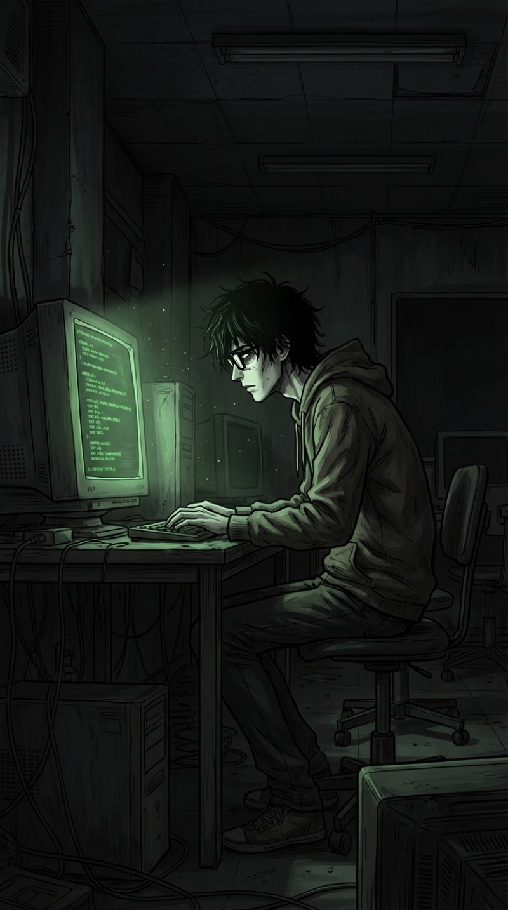
回宿舍的路上，经过主楼机房。凌晨两点，这里应该早就锁门了。
但有一台电脑亮着。
绿色的光从门缝里渗出来，像某种危险的信号。
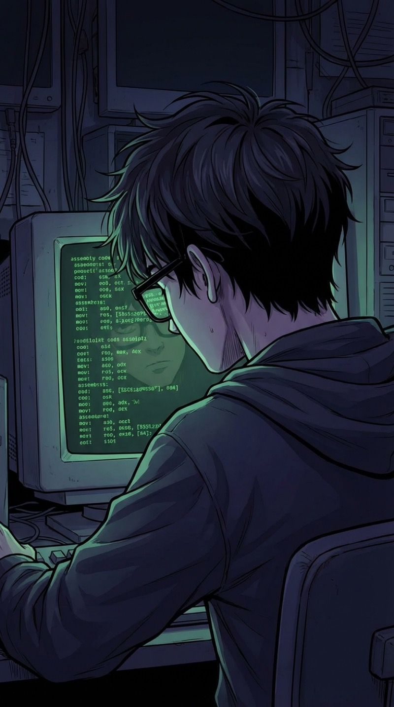
一个瘦高的身影坐在角落。黑框眼镜的镜片上映着满屏的汇编代码——不是教科书上那种示例代码，而是实战级的系统底层代码。
校园论坛上的传说：计算机系有个外号"鬼影"的学长，大一就黑进过学校教务系统改了全系课表。没人见过他真面目。
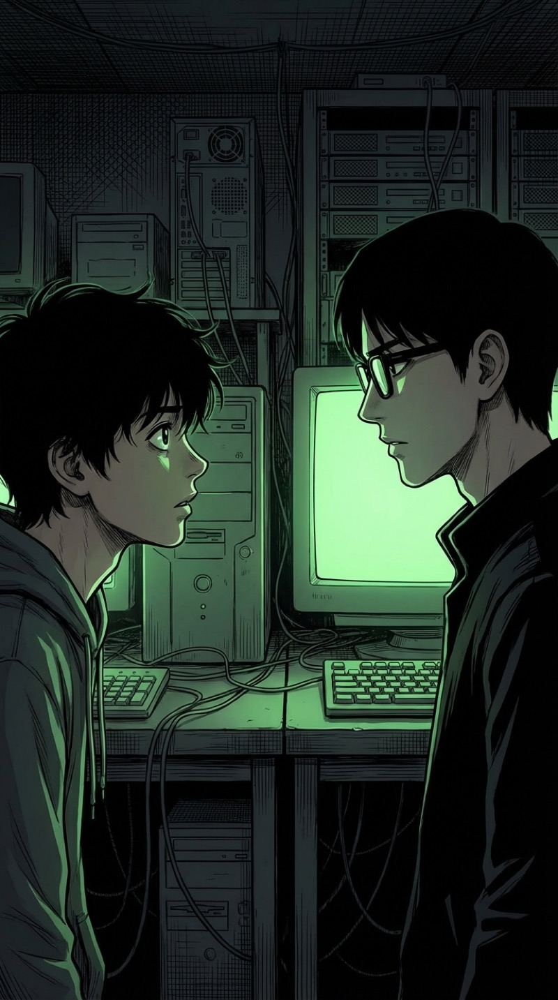
他突然转头。
那眼神像端口扫描一样精确——从我的鞋扫到我的脸，用了不到两秒钟，但我知道他已经完成了所有的信息采集。
"你在看什么？"声音很冷。像terminal里的错误提示。
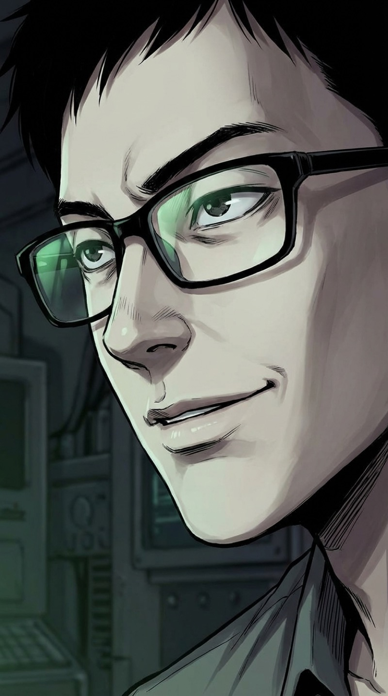
我的目光不由自主地掠过他的屏幕角落。
心跳漏了一拍。
屏幕角落有一个小窗口——机房监控的回放。画面里，是今天白天的我，在那台蓝屏电脑前飞速敲击键盘。我的每一个操作，他都看到了。
他嘴角微微上翘，露出了一个危险的笑容。那是我在这个时代，见到的第一个让我后背发凉的笑。